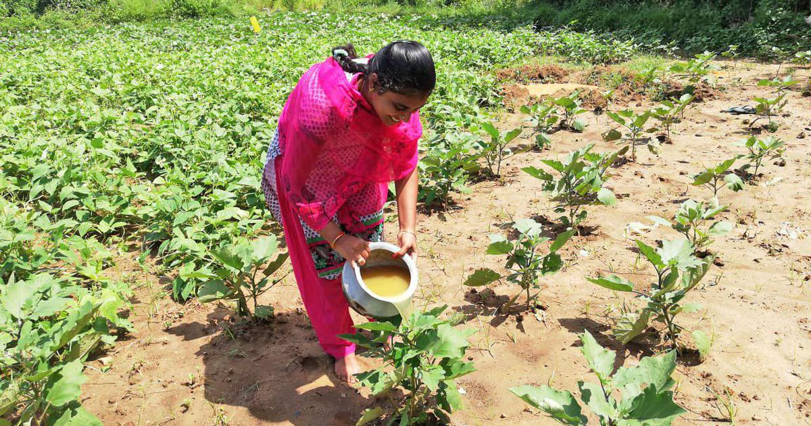
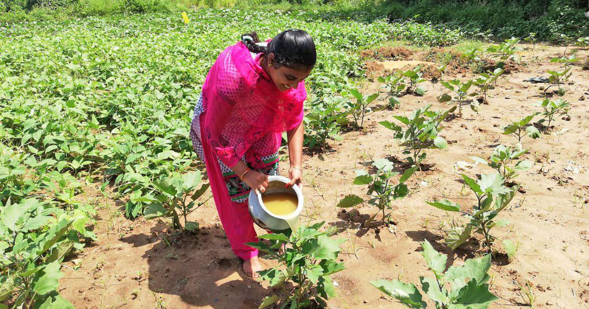

Soil Distribution in Andhra Pradesh

A complete resource on soil types, best crops, and modern farming techniques.
Soil Distribution in Andhra Pradesh
Andhra Pradesh has Red Soil, Black Soil, and Coastal Alluvial Soil, supporting crops like Rice, Chilli, Tobacco, and Pulses.
Experts suggest using modern irrigation techniques, organic fertilizers, and multi-cropping to improve yields.
 
